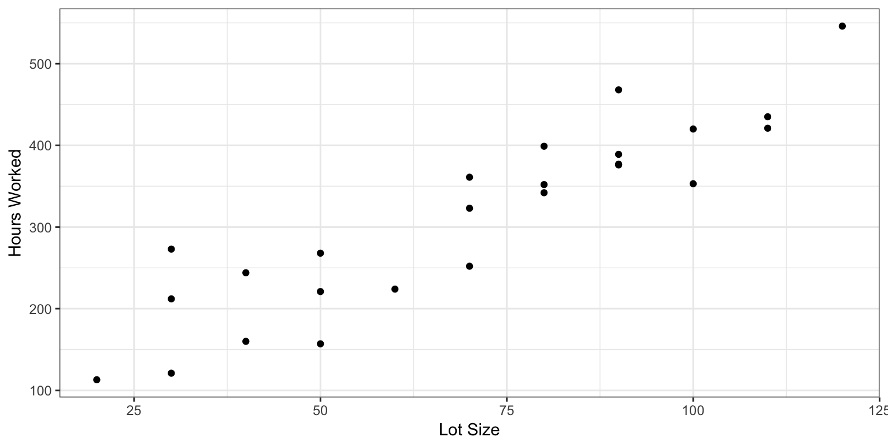

1.7 Inferences concerning \(\hat{\beta}_1\)
We recall the simple linear regression model \(Y_i = \beta_0 + \beta_1 X_i + \epsilon_i\) with the \(\epsilon_i\) i.i.d Gaussian with mean \(0\) and variance \(\sigma^2\). Recall that \(\hat{\beta}_1\), the least-square estimator (and also maximum likelihood estimator) of \(\beta_1\) is given by \[\begin{equation*} \hat{\beta}_1 = \frac{\sum{(X_i - \bar{X})(Y_i - \bar{Y})}}{\sum_{j} {(X_j - \bar{X})^2}} = \sum{\frac{(X_i - \bar{X})}{\sum_{j}{(X_j - \bar{X})^2}} Y_i} \end{equation*}\] Then \(\hat{\beta}_1\) is normally distributed with parameters \[\begin{equation*} \mathbb{E}[\hat{\beta}_1] = \beta_1; \qquad \mathrm{Var}[\hat{\beta}_1] = \frac{\sigma^2}{\sum{(X_i - \bar{X})^2}}. \end{equation*}\] Indeed, \[\begin{equation*} \begin{split} \mathrm{Var}[\hat{\beta}_1] &= \mathrm{Var}\Bigl[ \sum{\frac{(X_i - \bar{X})}{\sum_{j}{(X_j - \bar{X})^2}} Y_i}\Bigr] = \sum_{i} \mathrm{Var}\Bigl[\frac{(X_i - \bar{X})}{\sum_{j}{(X_j - \bar{X})^2}} Y_i\Bigr] \\ &= \sum_{i} \Bigl(\frac{(X_i - \bar{X})}{\sum_{j}{(X_j - \bar{X})^2}}\Bigr)^{2} \mathrm{Var}[Y_i] = \sigma^{2} \sum_{i} \frac{(X_i - \bar{X})^{2}}{(\sum_{j}{(X_j - \bar{X})^2})^2} \\ & = \frac{\sigma^2}{\sum{(X_i - \bar{X})^2}} \end{split} \end{equation*}\]As \(\sigma^2\) is unknown, it can be replaced with its unbiased estimate \(\mathrm{MSE} = \tfrac{1}{n-2} \sum{ (Y_i - \hat{\beta}_0 - \hat{\beta}_1 X_i)^2} = \tfrac{1}{n-2} \sum{ (Y_i - \hat{Y}_i)^2}\).
We then arrived at the following expression for \(s^{2}\{\hat{\beta}_1\}\), an estimate for the variance of the estimator \(\hat{\beta}_1\) \[\begin{equation*} s^{2}\{\hat{\beta}_1\} = \frac{\mathrm{MSE}}{\sum{(X_i - \bar{X})^2}} \end{equation*}\]One can then show that the normalized statistic \(\tfrac{\hat{\beta}_1 - \beta_1}{s\{\hat{\beta}_1\}}\) follows a Student t-distribution with \(n - 2\) degrees of freedom. Thus, general inference regarding confidence interval for \(\beta_1\) can be made.
For example, for a given \(\alpha \in (0,1)\), the \((1 - \alpha)\times 100\%\) confidence interval for \(\beta_1\) is the interval \[\begin{equation*} [\hat{\beta}_1 - s\{\hat{\beta}_1\}*\mathrm{qt}(\alpha/2; n- 2), \hat{\beta}_1 + s\{\hat{\beta}_1\}*\mathrm{qt}(1 - \alpha/2; n-2)] \end{equation*}\]where \(\mathrm{qt}(\alpha/2; n-2)\) is the \(100*\alpha/2\) percentile for the Student \(t\)-distribution with \(n - 2\) degrees of freedom.
Similarly, hypothesis tests of the form \[\begin{equation*} H_0 \colon \beta_1 = c \quad{\text{against}} \quad H_{A} \colon \beta_1 \not = c \end{equation*}\]for some given \(c\) at some significance level \(\alpha\) can be resolved by computing the test statistic \(\tfrac{\hat{\beta}_1 - c}{s\{\hat{\beta}_1\}}\) and decide, based on the rejection region \([\mathrm{qt}(\alpha/2; n-2), \mathrm{qt}(1 - \alpha/2; n-2)]\).
1.7.1 Inferences concerning \(\hat{\beta}_0\)
Recall that \(\hat{\beta}_0\) is given by \[\begin{equation*} \hat{\beta}_0 = \bar{Y} - \hat{\beta}_1 \bar{X} = \sum{\frac{Y_i}{n}} - \bar{X} \sum_{i=1}^{n} \frac{(X_i - \bar{X}) Y_i}{t_{xx}} \end{equation*}\] where \(t_{xx} = \sum{(X_i - \bar{X})^2}\). As \(\mathrm{Var}[Y_i] = \mathrm{Var}[\epsilon_i] = \sigma^{2}\), therefore \[\begin{equation*} \begin{split} \mathrm{Var}[\hat{\beta}_0] &= \mathrm{Var}\Bigl[\sum{ \Bigl(\frac{1}{n} - \frac{\bar{X} (X_i - \bar{X})}{t_{xx}}\Bigr) Y_i}\Bigr] \\ &= \sum_{i=1}^{n} \Bigl(\frac{1}{n} - \frac{\bar{X}(X_i - \bar{X})}{t_{xx}}\Bigr)^2 \mathrm{Var}[Y_i] \\ &= \sigma^{2} \sum_{i=1}^{n} \Bigl( \frac{1}{n^2} - \frac{2 \bar{X}(X_i - \bar{X})}{nt_{xx}} + \frac{\bar{X}^{2}(X_i - \bar{X})^2}{t_{xx}^2}\Bigr) \\ &= \sigma^{2} \Bigl( \frac{1}{n} + \frac{\bar{X}^{2}}{t_{xx}}\Bigr) = \sigma^{2} \Bigl(\frac{1}{n} + \frac{\bar{X}^{2}}{\sum{(X_i - \bar{X})^2}}\Bigr) \end{split} \end{equation*}\] Thus \(\hat{\beta}_0\) is normally distributed with mean and variance \[\begin{equation*} \mathbb{E}[\hat{\beta}_0] = \beta_0; \quad \mathrm{Var}[\hat{\beta}_0] = \sigma^{2} \Bigl(\frac{1}{n} + \frac{\bar{X}^{2}}{\sum{(X_i - \bar{X})^2}}\Bigr) \end{equation*}\] Once again, using \(\mathrm{MSE}\) as an estimate for \(\sigma^2\), we have the following expression for \(s^{2}\{\hat{\beta}_0\}\), the estimate of the variance of the estimator \(\hat{\beta}_0\) \[\begin{equation*} s^{2}\{\hat{\beta}_0\} = \mathrm{MSE} \Bigl(\frac{1}{n} + \frac{\bar{X}^{2}}{\sum{(X_i - \bar{X})^2}}\Bigr) \end{equation*}\]Then \(\tfrac{\hat{\beta}_0 - \beta_0}{s\{\hat{\beta_0}\}}\) is distributed as a Student \(t\)-distribution with \(n - 2\) degrees of freedom.
We now make a few remarks on inferences concerning \(\beta_0\) and \(\beta_1\)
- \(\hat{\beta}_0\) and \(\hat{\beta}_1\) are normally distributed under the normal error regression model for the error terms \(\epsilon_i\). Non-normality of the \(\epsilon_i\) will still result \(\hat{\beta}_0\) and \(\hat{\beta}_1\) being approximately normally distributed provided that \(n\) is large enough. This is due to the central limit theorem as \(\hat{\beta}_0\) and \(\hat{\beta}_1\) are of the form \(\sum{ c_i Y_i}\) where the \(Y_i\) are independent and the \(c_i\) does not depend on the \(Y_i\), i.e., \(\hat{\beta}_0\) and \(\hat{\beta}_1\) are sums of independent random variables.
- The confidence intervals and other inferences regarding \(\beta_0\) and \(\beta_1\) are to be interpreted with respect to taking repeated samples in which the \(\{X_i\}\) are kept constant between the samples. That is, the \(\{Y_i\}\) might change but not the \(\{X_i\}\).
- The term \(\sum{(X_i - \bar{X})^2}\) affects the variances of \(\hat{\beta}_0\) and \(\hat{\beta}_1\). Larger values of \(\sum{(X_i - \bar{X})^2}\) lead to smaller variances.
| parameter | estimate | variance | estimated variance |
|---|---|---|---|
| \(\beta_0\) | \(\bar{Y} - \hat{\beta}_1 \bar{X}\) | \(\sigma^2(n^{-1} + \bar{X}^2/t_{xx})\) | \(\mathrm{MSE} (n^{-1} + \bar{X}^2/t_{xx})\) |
| \(\beta_1\) | \(t_{xy}/t_{xx}\) | \(\sigma^2/t_{xx}\) | \(\mathrm{MSE}/t_{xx}\) |
1.7.2 Inference regarding \(\mathbb{E}[Y_h]\)
Suppose that \(\{(X_i,Y_i)\}_{i=1}^{n}\) are given following the normal error simple regression model and that \(\hat{\beta}_0\) and \(\hat{\beta}_1\) are estimated. Then, for a given \(X_h\), the fitted value \(\hat{Y}_h\) of \(\mathbb{E}[Y_h]\) is \(\hat{Y}_h = \hat{\beta}_0 + \hat{\beta}_1 X_h = \bar{Y} - \hat{\beta}_1 (\bar{X} - X_h)\). That is \[\begin{equation*} \hat{Y}_h = \sum_{i=1}^{n} \Bigl(\frac{1}{n} - \frac{(\bar{X} - X_h)(X_i - \bar{X})}{\sum{(X_i - \bar{X})^2}}\Bigr) Y_i \end{equation*}\] Thus, \(\hat{Y}_h\) is normally distributed with \[\begin{equation*} \mathbb{E}[\hat{Y}_h] = \mathbb{E}[Y_h]; \quad \mathrm{Var}[\hat{Y}_h] = \sigma^2 \Bigl[ \frac{1}{n} + \frac{(X_h - \bar{X})^2}{\sum{(X_i - \bar{X})^2}}\Bigr] \end{equation*}\] and the \(1 - \alpha\) confidence interval for \(\mathbb{E}[Y_h]\) is \[\begin{equation*} \hat{Y}_h \pm \mathrm{qt}(1 - \alpha/2; n - 2) \sqrt{\mathrm{MSE}} \sqrt{\frac{1}{n} + \frac{(X_h - \bar{X})^2}{\sum{(X_i - \bar{X})^2}}} \end{equation*}\]1.7.3 Predicting \(Y\) for a given \(X\).
In the previous discussion, one wants to infer the mean or expected value \(\mathbb{E}[Y_h]\) of some \((X_h,Y_h)\) sampled point.
Suppose instead that a new \(X_{*}\) is given and one wants to infer the possible value of \(Y_{*}\) associated with \(X_{*}\). We can do that through the notion of a prediction interval. Using the fitted regression line, one has an estimate \(\hat{Y}_{*} = \hat{\beta}_0 + \hat{\beta}_1 X_{*}\) for the expected value \(\mathbb{E}[Y_*]\) of \(Y_*\). Furthermore, as \(Y_{*} = \mathbb{E}[Y_*] + \epsilon_{*}\) where \(\epsilon_{*} \sim N(0,\sigma^2)\), the \(1 - \alpha\) prediction interval for \(Y\) is \[\begin{equation*} \hat{Y}_{*} \pm \mathrm{qt}(\alpha/2; n - 2) \sqrt{ \color{blue}{s^{2}\{\hat{Y_{*}}\}} \color{black}{+} \color{red}{s^{2}\{\epsilon\}}} \end{equation*}\] Substituting previous result for \(s^{2}\{\hat{Y_{*}}\}\) gives the prediction interval \[\begin{equation*} \hat{\beta}_0 + \hat{\beta}_1 X_{*} \pm \mathrm{qt}(1 - \alpha/2; n - 2) \sqrt{\mathrm{MSE}} \sqrt{1 + \frac{1}{n} + \frac{(X_{*} - \bar{X})^2}{\sum{(X_i - \bar{X})^2}} } \end{equation*}\]- Variability in prediction interval depends on how far \(X_*\) is from \(\bar{X}\).
- The construction of the prediction interval depends strongly on the normal error assumption. That is, departures from normality assumption will most likely lead to erroneous inference even when the number of sampled data points \(\{(X_i,Y_i)\}\) is large.
- The difference between inference regarding \(\mathbb{E}[Y_h]\) and \(Y_h\) are mainly due to difference in inferring the trend/mean response in the former and the individual outcome in the latter. For example, if \(X\) is GPA in high-school and \(Y\) is GPA in college, then inference regarding \(\mathbb{E}[Y_h]\) is concerned with the average GPA of all students whose high school GPA is \(X_h\). Meanwhile, inference regarding \(Y_h\) is concerned with the GPA of a (specific) student whose high school GPA is \(X_h\).
1.7.4 Confidence band for regression line
We want to obtain a, say \((1 - \alpha)\times100\%\) confidence band/region for the entire regression line \(\mathbb{E}[Y] = \beta_0 + \beta_1 X\). This region is defined by the following curves \[\begin{equation*} \hat{\beta}_0 + \hat{\beta}_1 X \pm W_{\alpha} s\{\hat{Y}\} = \hat{\beta}_0 + \hat{\beta}_1 X \pm W_{\alpha} \ast \sqrt{\mathrm{MSE}} \sqrt{\frac{1}{n} + \frac{(X - \bar{X})^{2}}{\sum{(X_i - \bar{X})^2}}} \end{equation*}\]where \(W_{\alpha}^2 = 2 \mathrm{qf}(1 - \alpha; 2, n - 2)\) is the \((1 - \alpha)\times 100\%\) quantile level of the \(F\) distribution with \(\mathrm{df1} = 2, \mathrm{df2} = n - 2\).
The above confidence band is known as the Working-Hotellling procedure. It is an example of simultaneous inference. \(W\) induces a joint confidence region for the \(\{\mathbb{E}[Y_h]\}\).
A \(1 - \alpha\) confidence interval derived from \(\hat{\beta}_0\) and a \(1 - \alpha\) confidence interval derived from \(\hat{\beta}_1\) does not necessarily combine to give a joint confidence region of \(1 - \alpha\) for \(\beta_0\) and \(\beta_1\). Similarly, a collection of \((1 - \alpha) \times 100\%\) confidence intervals for \(\mathbb{E}[Y_h]\) as \(X_h\) varies do not necessarily combine to give a \((1 - \alpha) \times 100\%\) joint confidence band for the entire regression line.
1.7.5 Example: synthetic dataset
The Toluca data set is a synthetic data set used in (Kutner et al. 2004). The data set describe the lot size and work hours required for a number of manufacturing requests. We will denote these variables as \(X\) (lot size) and \(Y\) (work hours). We want to perform a simple linear regression of work hours on lot size.

The following values are computed from the data. \[\begin{gather*} n = 25; \quad \bar{X} = 70; \quad \bar{Y} = 312.28 \\ \quad t_{xx} = \sum_{i=1}^{n} (X_i - \bar{X})^2 = 1.98\times 10^{4}; \\ \quad t_{xy} = \sum_{i=1}^{n} (X_i - \bar{X})(Y_i - \bar{Y}) = 7.07\times 10^{4} \\ \hat{\beta}_1 = \frac{t_{xy}}{t_{xx}} = 3.57; \quad \hat{\beta}_0 = \bar{Y} - \hat{\beta}_1 \bar{X} = 62.37 \\ \mathrm{MSE} = \frac{1}{n-2}\sum_{i=1}^{n}(Y_i - \hat{Y}_i)^2 = 2383.72 \\ s^2\{\hat{\beta}_0\} = \mathrm{MSE}\Bigl(\frac{1}{n} + \frac{\bar{X}^2}{t_{xx}}\Bigr) = 685.26; \\ \quad s^2\{\hat{\beta_1}\} = \frac{\mathrm{MSE}}{t_{xx}} = 0.12. \end{gather*}\] We now want to test the hypothesis \(H_0 \colon \beta_1 = 0\) versus \(H_1 \colon \beta_1 \not = 0\). The test statistic for this is \[\begin{equation*} T = \frac{\hat{\beta}_1}{s\{\hat{\beta}_1\}} = 10.29 \end{equation*}\]If we assume that the errors are independent and identically distributed normal random variables, then \(T\) follows a Student \(t\)-distribution with 23 degrees of freedom under the null hypothesis (the hypothesis that \(Y_i = \beta_0 + 0 \times X_i + \epsilon_i\) with \(\epsilon_i \sim N(0, \sigma^2)\) and independent). We now let \(\alpha = 0.05\) be the significance level of the test. As this is a two-sided hypothesis test, the rejection region corresponding to this level \(\alpha\) is \(|T| \geq \mathrm{qt}(1 - \alpha/2, 23)\), i.e., \(|T| \geq 2.07\). We thus reject the hypothesis \(H_0 \colon \beta_1 = 0\) in favor of \(H_1 \colon \beta_1 \not = 0\). The \(p\)-value of the test is \(< 10^{-6}\). We conclude that there is strong evidence that there is an association between lot size and work hours.
As another example, we test the hypothesis \(H_0 \colon \beta_0 \leq 10\) against \(H_A \colon \beta_0 > 10\). The test statistic for this is \[\begin{equation*} T = \frac{\hat{\beta}_0 - 10}{s\{\hat{\beta}_0\}} = 2 \end{equation*}\]If we assume that the errors are independent and identically distributed normal random variables, then \(T\) follows a Student \(t\)-distribution with 23 degrees of freedom under the null hypothesis (the hypothesis that \(Y_i = \beta_0 + \beta_1 \times X_i + \epsilon_i\) with \(\beta_0 \leq 10\), \(\epsilon_i \sim N(0, \sigma^2)\) and independent). We now let \(\alpha = 0.05\) be the significance level of the test. As this is a one-sided hypothesis test, the rejection region corresponding to this level \(\alpha\) is \(T \geq \mathrm{qt}(1 - \alpha, 23)\), i.e., \(T \geq 1.71\). We thus reject the hypothesis \(H_0 \colon \beta_0 \leq 10\) in favor of \(H_1 \colon \beta_0 > 10\). The \(p\)-value of the test is \(0.03\). Should we conclude that there is strong evidence that there is an association between positive lot size and doing no work hours ?
The \(95\%\) confidence intervals for \(\beta_0\) and \(\beta_1\) is given by \[\begin{gather*} 62.37 \pm 2.07 \sqrt{685.26} = (8.21, 116.52); \\ 3.57 \pm 2.07 \sqrt{0.12} = (2.85, 4.29) \end{gather*}\]respectively. The confidence interval for \(\beta_1\) indicates that we will reject the hypothesis \(H_0 \colon \beta_1 \leq c\) in favor of \(H_1 \colon \beta_1 > c\) at significance level \(0.05\) for any \(c < 2.85\).
Suppose now that \(X_h = 100\). Then the estimate \(\hat{Y}_h\) for \(\mathbb{E}[Y_h]\) and its estimated variability is \[\begin{gather*} \hat{Y}_h = \hat{\beta}_0 + \hat{\beta}_1 X_h = 419.39; \\ s^{2}\{\hat{Y_h}\} = \mathrm{MSE}\Bigl(\frac{1}{n} + \frac{(X_h - \bar{X})^2}{t_{xx}}\Bigr) = 203.7 \end{gather*}\] The \(95\%\) confidence interval for \(\mathbb{E}[Y_h]\) is then given by \[\begin{equation*} \hat{Y}_h \pm s\{\hat{Y}_h\} \ast t(0.98, 23) = (389.86, 448.91) \end{equation*}\] We now compute a prediction interval for \(X_{*} = 100\). From our previous derivations, the estimated variability for \(\hat{Y_{*}}\) is \[\begin{equation*} s^{2}_{\mathrm{pred}}\{\hat{Y}_{*}\} = \mathrm{MSE}\sqrt{1 + \frac{1}{n} + \frac{(X_* - \bar{X})^2}{t_{xx}}} = 2587.41. \end{equation*}\] Thus the \(95\) prediction interval for \(Y_{*}\) is \[\begin{equation*} \hat{Y}_{*} \pm s_{\mathrm{pred}}\{\hat{Y}_{*}\} \mathrm{qt}(0.98, 23) = (314.16, 524.61) \end{equation*}\]Figure 1.7: Least square regression line (in black) and associated confidence bands. The green curve is the 95% Working-Hotelling confidence band. The blue curve is the 95% confidence band from the confidence intervals for \(\mathbb{E}[Y_h]\) as \(X_h\) varies. The red curve is the 95% confidence band obtained from combining the 95% confidence intervals for \(\beta_0\) and \(\beta_1\).
References
Kutner, M., C. Nachtsheim, J. Neter, and W. Li. 2004. Applied Linear Statistical Models. 5th ed. McGraw-Hill/Irwin.